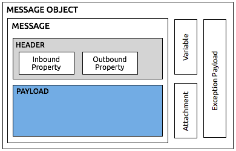
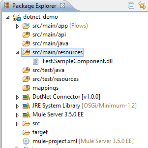
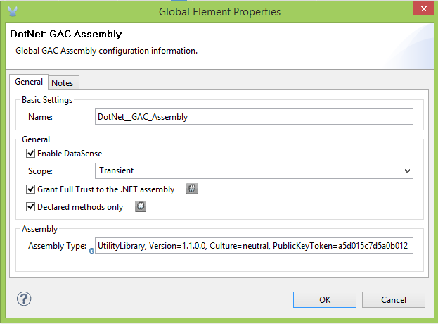
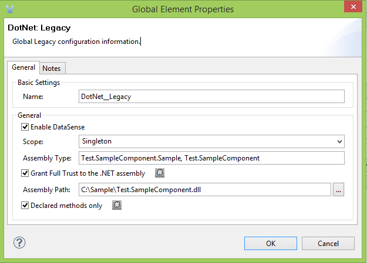
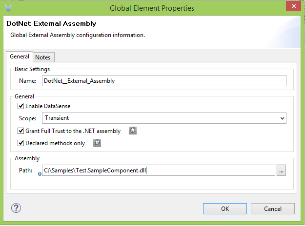
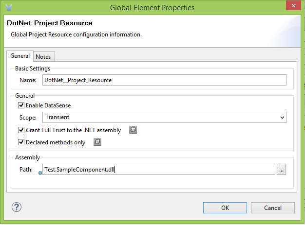

DotNet Connector User Guide
The .NET connector lets you execute native .NET code in a Mule ESB application. Supported scenarios include: executing code in an existing binary assembly (DLL) without modification, or new development of .NET code that extends the capability of your integration application.
Release Notes: DotNet Connector Release Notes
Samples: dotnet-connector-samples.zip
This connector executes .NET code using the Java Native Interface (JNI), which provides fast interprocess communication between the Java Virtual Machine (JVM) and a native application running in a host operating system.
The .NET connector uses JNI to invoke a .NET component running in the Microsoft Common Language Runtime (CLR). The message in a running Mule flow passes between the JVM and the CLR to invoke a .NET method in an existing class.
The connector uses the following strategies to marshall Mule messages between the JVM and the CLR, which mainly depend on the content type associated with the message payload:
-
Primitive types and Java classes are serialized as JSON.
-
JSON or XML data pass directly as strings without data conversion.
-
Binary data passes directly as a byte array without data conversion.
Invoking Methods Under the Hood
The .NET connector invokes an instance or static method in an existing class as long as it is public. The properties of the Mule message map to the expected arguments in the .NET method according to name and data type.
The following flow demonstrates how the connector performs mapping:
The Set Payload transformer generates the JSON content and sets it as the payload of the Mule message:
For example, for the URL http://localhost:8081/?name=foo&age=10, the Mule message’s payload is set to: {"name":"foo", "age":10}
The JSON representation contains properties for name and age, which automatically map (by name) to the arguments of the .NET method ExecuteSimple:
Specify the name of the .NET method you want to invoke:
Advanced Scenarios for Argument Mappings
Mapping with Attributes
The Mule message is the data that passes through an application via one or more flows. The message consists of two main parts:
-
Message header, which contains metadata about the message
-
Message payload, which contains business-specific data

On the .NET side, you can use attributes to indicate from where to map the parameters:
| Attribute | Uses the |
|---|---|
|
Query strings collection |
|
Mule message’s payload |
|
Inbound property collection |
|
Invocation property collection |
|
Outbound property collection |
|
Session property collection |
These attributes are not mandatory. If no attribute is specified, the .NET connector uses the Mule message’s payload (MessagePart.FromBody). You can combine attributes for more flexibility.
The following is an example of a method using a combination of attributes:
Method arguments:
-
person: Mapped from the Mule message’s payload, which contains a JSON representation of the type Person
-
id: Mapped from the query string named “id”, such as, http://localhost:8081/?id=1
-
increment: Mapped from the inbound property named “increment”
Mapping XML Data
The .NET connector automatically maps XML data to an XML document. The connector passes XML data directly as a string without performing serialization. If the invoking .NET method contains an argument of type XmlDocument, then the XML data loads into an XmlDocument and passes to the method.
The following shows a flow that passes XML data to the .NET Connector:
The .NET connector is configured to invoke the ExecuteXml method. The following shows the method’s signature:
Note: If the message source in your Mule flow does not set the Content-Type to text/xml, then you must set this manually. If not set, your message is treated as a string and passed to .NET in escaped form. To manually set the Content-Type, add a Property Transformer with the following settings:
Mapping JSON Data
The .NET connector serializes primitive types and POJOs as JSON. The properties of the JSON data structure are automatically mapped by name to the .NET method arguments.
Anypoint DataMapper Support
The .NET connector supports Anypoint DataMapper for graphically mapping input elements to the arguments of the .NET method.
Example for a complex mapping:
Executing .NET Code in Full Trust
NET code can be executed in an application domain with restricted privileges to avoid the execution of malware code that can affect the stability of the ESB. These restrictions include limited access to the file system, native code execution, network calls, or registry access to name a few.
By default the .NET connector is set to use full trust. You can disable it by using the fullTrust attribute shown in the image below:
Execution Scope
The .NET connector supports these scopes:
-
Singleton: Shares the same instance of the .NET component across multiple calls. This is useful for storing a shared state in class instance members across different calls.
-
Transient: Creates a new instance of the .NET component per request.
Use the following scope attribute to set a .NET component’s scope:
Hot Swapping and Deployment
The connector supports deploying a new version of the assembly containing the .NET component without needing to restart the application in the Mule ESB.
When the .NET component executes for first time by the router, a file watcher starts to detect changes in the folder where the assembly with the component deploys. If the component detects a change or a new assembly deploys, the router starts using this new version for successive calls.
Packaged Assemblies
For packaged assemblies, the deployment strategy is a bit different. Replace the existing .NET assembly located under the folder AnypointStudio/.mule/apps/applicationName/classes is with the new version. (Substitute your application’s name for applicationName.) Use the new assembly version after redeploying the application in Mule.
Log the following message:
NET assembly location:
/studio_path/.mule/apps/application_name/classes/assembly_name
Substitute studio_path, application_name, assembly_name with the path to where you installed Anypoint Studio, the name of your application, and the name of your assembly.
Use this path to deploy the new .NET assembly.
Assembly Configuration
For .NET assemblies that you reference from within a Mule flow, you can access configuration settings defined in .NET configuration files using the standard System.Configuration classes such as ConfigurationManager. The naming of configuration files for assemblies follows the convention for class libraries, where the name is in the form: assembly_name.dll.config - replace assembly_name with the name of your assembly.
If you use a configuration file for your assembly, add the configuration file to the resources folder for the Mule application (src/main/resources). This is the same location to which you deploy the assembly itself if you choose the package deployment model. When referencing an assembly hosted in the Global Assembly Cache (GAC), Mule also checks the resources directory for a matching assembly configuration file:
If you are using an assembly reference path that is external to the Mule application, then locate your assembly configuration file in the same directory as the assembly.
To reload a configuration:
-
Touch the Mule application
.xmlfile, which causes a hot-reload of the application by the ESB server (you can touch a Windows file using thecopy filename+,,command, which updates the last write time on a file). -
Touch the assembly to which the assembly configuration file belongs. This causes the application domain to reload along with the new configuration.
Advanced Integration Concepts
Assembly References
The .NET connector supports the following deployment types:
-
Package: An assembly embedded as an application resource. Add the assembly as an application resource by copying it to the
src/main/resourcesfolder under the application directory:Specify the assembly’s partial name
[Namespace.ClassName], [Assembly]and the name of the assembly as the Assembly Path. -
External : You can reference an external assembly. Specify the Assembly partial name
[Namespace.ClassName], [Assembly]and the absolute path to the external assembly as the Assembly Path. -
GAC : Assembly installed in the GAC (Global Assembly Cache). To reference an assembly installed in the GAC, use the
Assembly Fully Qualified Name: [Namespace.ClassName], [Assembly], [Version], [Culture], [PublicKey]and leave the assembly path empty. For more information, see: How to: Install an Assembly into the Global Assembly Cache
Creating a .NET Global Element
A Mule Global Element allows you to define connector parameters once, then reference the same set of parameters from any number of individual connectors in your application. In this example, we create a .NET global element which is referenced by the .NET connector in our application’s flow.
To create and configure a .NET global element, follow these steps:
-
Click the Global Elements tab at the base of the canvas, and then click Create.
-
Use .NET Connector as filter to locate and select the Global Type:
-
Click OK. Studio displays the Global Element Properties window.
-
There are four types of Global Elements available for the .NET connector. Enter the values for the required parameters as described below.
-
GAC Assembly: Used for selecting an assembly installed in the GAC (Global Assembly Cache.
Enter the values for the element as shown below:
Parameter Value Name
Dot_Net_GAC_Connector
Enable DataSense
True (select the check box)
Scope
Transient
Grant Full Trust to the .NET assembly
True (select the check box)
Declared methods only
True (select the check box)
Assembly Type
Use the Assembly Fully Qualified Name (http://msdn.microsoft.com/en-us/library/2exyydhb(v=vs.110).aspx).
-
Legacy: Used for backwards compatibility. Enter the values for the element as shown below:
Parameter Value Name
Dot_Net_Legacy
Enable DataSense
True (Select the check box)
Scope
Singleton
Assembly Type
Test.SampleComponent.Sample, Test.SampleComponent
Grant Full Trust to the .NET assembly
True (Select the check box)
Assembly Path
Path to the Test.SampleComponent.dll file
Declared methods only
True (Select the check box)
-
External Assembly: Used for selecting an assembly embedded as an assembly external to the application. Enter the values for the element as shown below:
Parameter Value Name
Dot_Net_Resource_External_Assembly
Enable DataSense
True (select the check box)
Scope
Transient
Grant Full Trust to the .NET assembly
True (select the check box)
Declared methods only
True (select the check box)
Assembly Path
Path to the Test.SampleComponent.dll file
-
Project Resource: Used for selecting a project embedded as an assembly external to the application. Enter the values for the element as shown below:
Parameter Value Name
Dot_Net_Project_ Resource
Enable DataSense
True (select the check box)
Scope
Transient
Grant Full Trust to the .NET assembly
True (select the check box)
Declared methods only
True (select the check box)
Assembly Path
Name of the assembly file or path to
the Test.SampleComponent.dll file
-
Supported Features
DataSense
The .NET connector supports data sense allowing the user to browse and select the type and method for the configured assembly:
Mule Context
The .NET connector provides context to the developer through the MuleContext.Current property.
The MuleContext structure:
-
Message: A wrapper of the MuleMessage being processed.
-
Logger: Allows you to log messages through the configured log4j logger in the Mule application.
The MuleContext and message mapping attributes are part of the .NET Connector SDK assembly which is available for download here: dotnet-connector-sdk.zip. To leverage the classes in the SDK, simply unzip the package and add a reference to the Org.Mule.Api.dll assembly from your project. You can import these types from the Org.Mule.Api namespace.
Mule Message Metadata
The .NET connector provides context regarding the message that is being processed. You can access it using the MuleContext.Current.Message property.
The message is a wrapper of the MuleMessage and contains the following properties:
-
InboundProperties: A read-only list of metadata properties specific to the message source.
-
OutboundProperties: Contain metadata similar to that of an inbound property, but an outbound property is applied after the message enters the flow.
-
InvocationProperties: Contain user-defined metadata about the message that apply only to the flow in which they exist.
-
SessionProperties: Contain user-defined metadata about the message that apply across all flows within the same application.
-
QueryStrings: A collection of the query strings
-
Payload: The payload of the message
Logging
The .NET connector uses Log4j for logging its debugging purposes.
-
Mule Runtime 3.5: Uses log4j and logging is enabled and configured using the standard log4j.properties file that should be placed in the same directory as your Mule application. Add the DotNet Connector to the log4j.properties file and set it to “debug”:
log4j.logger.org.mule.modules.dotnet.jni.DotNetBridge=debug
-
Mule Runtime 3.6: Uses log4j2 and logging is enabled and configured using the log4j2.xml file that should be placed in the same directory as your Mule application. Add the DotNet Connector to the log4j2.xml file and set it to “debug”:
<Logger name="org.mule.modules.dotnet.jni.DotNetBridge" level="DEBUG"> </Logger>
|
In this case we’re using the Appender named Console which writes to the Mule Console. You can add it to the Appenders section: |
Using the MuleLogger in your .NET code:
You can access the MuleLogger through the MuleContext.Current.Logger property. The MuleLogger provides 2 methods for writing logs:
-
Write(string message): Writes a message
-
Write(string format, params object[] args): Writes a formatted message
Notifications
The .NET connector support Mule Server Notifications. When configured, these notifications fire whenever a .NET method is invoked.
To enable notifications you must add the <notifications> element in your Mule configuration file:
The .NET connector only fires notifications when an instance of the DotNetConnectorNotificationListener is registered. You must create your own Notification Listener and extend DotNetConnectorNotificationListener.
DotNetNotification contains the following registered actions:
-
DOTNET_ARGUMENT_MAPPING_START: Fired when the argument mapping strategy starts -
DOTNET_ARGUMENT_MAPPING_STOP: Fired when the argument mapping strategy ends -
DOTNET_METHOD_START: Fired when the .NET execution starts -
DOTNET_METHOD_STOP: Fired when the .NET execution ends
DataWeave
The .NET connector supports DataWeave allowing the user to transform the output to any kind of format (XML, CSV, JSON, Pojos, Maps, etc).
The .NET connector describes its output as a Map:
Use the .NET connector’s output in DataWeave to transform the message’s payload:
Transformed output:
<?xml version='1.0' encoding='UTF-8'?> +
<weather>
<item id="1">
<name>Thunder Storms</name>
<icon>http://ws.cdyne.com/WeatherWS/Images/thunderstorms.gif</icon>
</item>
<item id="2">
<name>Partly Cloudy</name>
<icon>http://ws.cdyne.com/WeatherWS/Images/partlycloudy.gif</icon>
</item>
<item id="3">
<name>Mostly Cloudy</name>
<icon>http://ws.cdyne.com/WeatherWS/Images/mostlycloudy.gif</icon>
</item>
<item id="4">
<name>Sunny</name>
<icon>http://ws.cdyne.com/WeatherWS/Images/sunny.gif</icon>
</item>
...
</weather>See Also
-
Learn more about the DotNet connector in the DotNet Connector FAQs.